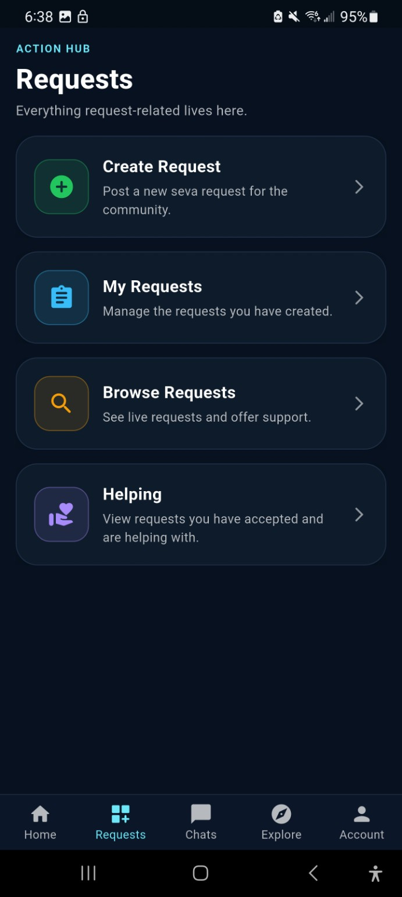
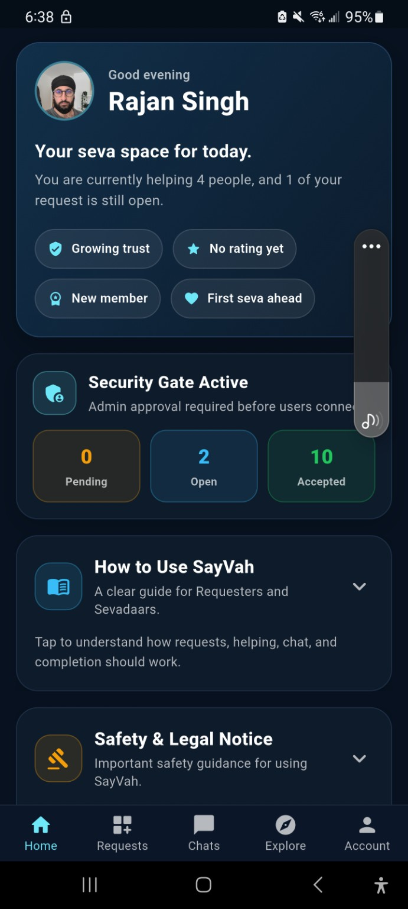
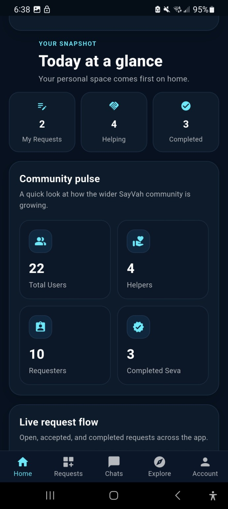
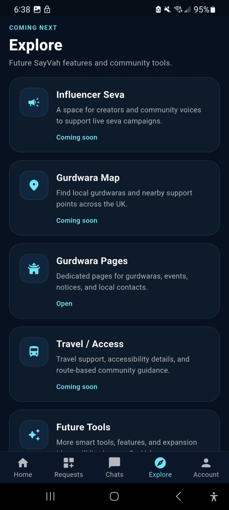

No. SayVah comes from the Sikh idea of seva, but it's for anyone, and nothing in the app assumes you know the terms.
Need a hand? Someone nearby wants to help.
SayVah is a free app that puts people who need everyday help, like a lift, some shopping or sorting out a phone, in touch with local volunteers who want to give their time.
Free on iPhone and Android. Open to everyone, whether or not you're Sikh.
22 members 4 active helpers 3 seva completed so far


If you're new to all this, start here.
- SayVah
- An app where you can ask for practical help, or offer it. A request, the chat about it and how it's going all stay together in one place.
- Seva
- Selfless service: giving your time, effort or skills to help someone else, without expecting anything back.
- Sevadaar
- Someone doing seva. On SayVah, it's the volunteers offering help.
- Who it's for
- Anyone. SayVah grew out of the Sikh idea of seva, but you don't need to be Sikh, or know any of the words, to use it.
How it works, from both sides.
If you need help
- Download SayVah and set up your profile.
- Post a request. Say what you need, roughly where, and when.
- Wait for offers from local sevadaars who can do it.
- Look at their profile and follow the approval steps before you meet anyone.
- Sort out the details in the app's chat.
- Mark it done once you've been helped.
If you want to volunteer
- Make your profile useful: a clear photo, your area and a bit about you.
- Browse requests near you.
- Offer to help with one you really have the time and skills for.
- Wait for approval. Don't turn up until the app says you're connected.
- Agree the time, place and task in the chat.
- Help, then mark it complete.
This is what the app looks like.


Helping strangers should feel safe. Here's how SayVah handles it.
- An admin approves connections where the request needs it, before anyone goes ahead.
- You can see who someone is from their profile before you accept or offer help.
- You can report anyone who behaves badly, and the team will look at it.
- You can block anyone you don't want to hear from again.
- Chat stays in the app, so arrangements are clear and can be checked if something goes wrong.
- Gurdwaras and organisations can be involved, adding people who know the community.
Where SayVah is running.
We're opening area by area, so there are enough volunteers wherever we go. This list comes straight from the app.
Loading areas…
Put your name down.
Fill this in if you'd like to volunteer, might need help, represent a Gurdwara or organisation, or just want to hear how SayVah is getting on near you.
We'll only contact you about SayVah and community opportunities near you. How we handle your details.
How do I…
Create your account
Questions people ask us.
Everyday practical things: collecting shopping, help with a phone or computer, a lift, a hand at a community event, or another reasonable task.
You can look at the profile of anyone offering to help, and the request and approval steps happen before you're connected.
Stop. Use the report or block tools, and contact the SayVah team. If anyone is in immediate danger, call the emergency services.
No. It's for community support, not a replacement for emergency, medical, safeguarding or other professional services.
No. SayVah is free to download and free to use, and sevadaars give their help freely.
What happens to your information.
What SayVah collects, why, where it's kept, who can see it, and what you can do about it. The full notice is on the Privacy page.
SayVah processes personal information to provide the service, connect requesters with Sevadaars, operate community safety features, administer accounts and support participating areas and organisations.
This section explains the main categories of information used by SayVah, how that information is used and the controls available to users.
Clear categories
SayVah explains the main account, activity, communication, safety, location and website information used to operate the service.
No unsupported claims
SayVah does not describe data as time-limited, UK-only, end-to-end encrypted or automatically deleted unless that is confirmed by the implemented service.
Other SayVah users may see
- Public profile information needed for community interaction.
- Name and profile image where these are displayed in the app.
- Role, area and verification or trust indicators where applicable.
- Information intentionally included in a community request.
Not intended for public display
- Account email address.
- Private contact details and internal account administration fields.
- Reports, moderation notes and safety review information.
- Internal verification review information and evidence fields.
Location & Live Seva
SayVah includes location-related functionality associated with active Seva and safety features. Location information is not intended to be displayed publicly to the wider SayVah community.
- Active areas
- SayVah uses area and location records to show active SayVah service areas.
- Location sessions
- SayVah includes location-session records for location-enabled features. The exact app trigger for location permission must be confirmed from the live app before SayVah describes a specific permission moment publicly.
- Administrator access
- Authorised SayVah administrators may access location-related records where required to operate the service, support active Seva or investigate safety issues.
- Retention
- SayVah does not currently publish a fixed location-data retention period. This must be specified in the full Privacy Notice before location retention is represented as time-limited.
Are my messages private?
Messages are stored as part of the SayVah service and are intended for the participants involved in the relevant conversation or request. Authorised SayVah administrators may access relevant conversations when necessary for platform administration, moderation, safeguarding, investigating reports or resolving disputes. SayVah does not describe messages as end-to-end encrypted.
How does verification work?
Verification decisions and review status are recorded against the user's SayVah account. Authorised administrators can review and approve or deny verification. Verification records may include whether the account is verified, the verification status, approval status, review date, reviewing administrator and review message. SayVah does not currently operate a general ID-document upload system unless an identity document is specifically requested through an implemented verification process.
SayVah does not sell users' personal information.SayVah does not currently use users' personal information to operate third-party advertising within the service.
Account information: name, email address, Firebase account identifier, profile information, profile photograph where supplied, account role, selected area or location, and account or verification status.
SayVah activity: requests created, requests accepted or helped with, request status and activity, completed Seva, ratings or feedback where used, and help connections.
Communication: in-app chats, messages associated with requests, message timestamps and conversation participants.
Safety and administration: reports, moderation information, verification status, verification review information, account restrictions such as hidden or banned state, and Gurdwara or organisation affiliation where applicable.
Location-related information: location or session information where a location-enabled SayVah feature is being used.
Website launch signups: name, email address, area, interest, optional message, consent, submission time and source.
SayVah uses information to create and administer accounts, connect requesters with Sevadaars, manage requests, support in-app communication, operate safety reporting, review verification, maintain community areas, support Gurdwara or organisation involvement where applicable, and contact launch-list users about SayVah updates they consented to receive.
SayVah uses Google Firebase and Google Cloud services to operate its backend infrastructure. Firebase Authentication is used for account authentication. Cloud Firestore is used for application data such as users, requests, chats, reports, locations, organisations and launch signups. Firebase and Google Cloud infrastructure also supports backend functionality, including launch signup notifications.
SayVah has Firebase Storage configured, but this public information should not be read as confirmation that a general user-file upload flow is active. Google may process or store data through the infrastructure used to provide these services. SayVah does not describe user data as being stored exclusively in the United Kingdom unless that can be guaranteed by the configured service.
Other users: Other SayVah users may see information required for community interaction, such as public profile information, name or profile image where displayed, role, area, verification or trust indicators, and information intentionally included in a community request.
Authorised SayVah administrators: Authorised SayVah administrators can access account and platform information where required to operate the service, review verification, investigate reports, manage requests and maintain community safety. This can include access to relevant in-app conversations where required for moderation, safeguarding or investigation of a report.
Gurdwaras and organisations: SayVah stores Gurdwara and organisation records and affiliation information where applicable. SayVah does not state that every Gurdwara or organisation can see every user's information.
No. Your account email address is not intended to be displayed publicly to other SayVah users. Authorised SayVah administrators may access account email information where required for administration, support, verification, safety review or account management.
Private contact details, internal account fields, moderation information, reports and verification review information are not intended for public display. Relevant administrators may access these records where required to operate SayVah and maintain community safety.
SayVah can record Gurdwara or organisation names, areas, status and administrator or manager fields, along with user affiliation where applicable. More specific Gurdwara or organisation access rights should only be stated once they are confirmed in the live app and access rules.
When a user submits a safety report, SayVah stores information needed to review that report. Authorised administrators can review reports and relevant associated account, request or conversation information in order to investigate and take appropriate action. Implemented administrator actions include resolving or dismissing reports, reviewing verification, hiding a user and banning or restricting a user.
SayVah provides an in-app account deletion process. Account deletion removes the user's account through the implemented deletion process. Some associated information may need to be retained where necessary for security, dispute handling, legal obligations or the integrity of records. The complete retention treatment will be specified in the full Privacy Notice.
SayVah retains information while it is required to operate accounts, requests, communications, safety functions and platform records. A formal retention schedule is being established for categories including messages, completed requests, reports and location-session information.
Users can update supported profile information, manage relevant account settings, report or block users where implemented, delete their account using the in-app deletion feature, and contact SayVah about information associated with their account.
Questions about your information?
If you have a question about how SayVah uses your information, privacy, account data or a safety-related concern, contact SayVah directly.
Privacy & Data: rajan@s3dsystems.com
Get SayVah.
Free on iPhone and Android. On a computer, you can use it straight in your web browser.
Talk to the SayVah team.
App problems, volunteering questions, Gurdwara or organisation enquiries, or anything else.
Reporting a safety concern? Give us enough detail to understand what happened, but leave out sensitive personal information you don't need to share.